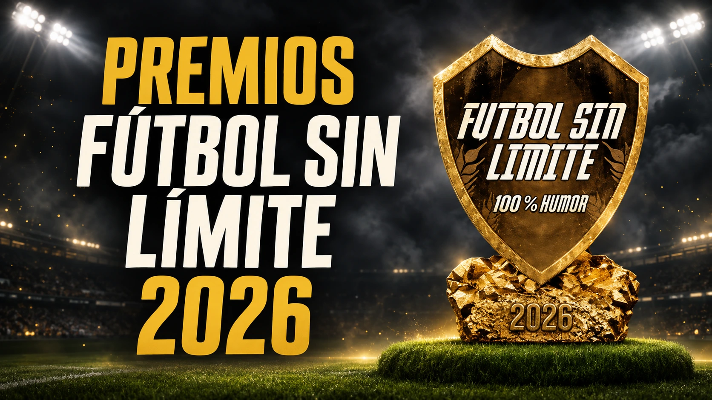
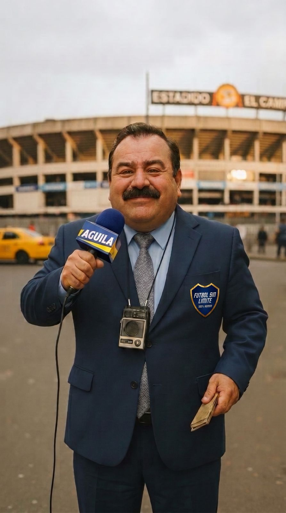
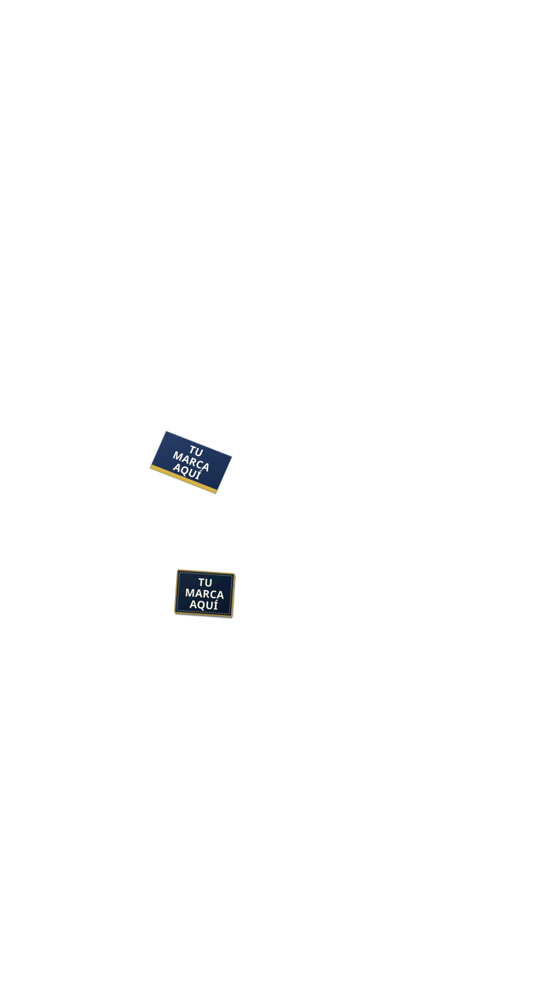
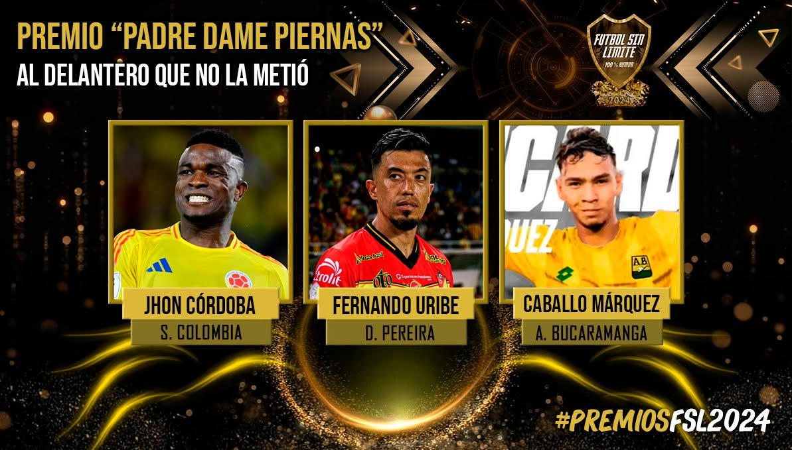

Participantes únicos esperados
Personas que participarían en la campaña de votación por WhatsApp.

Los Premios Fútbol Sin Límite son una campaña digital de humor sobre el fútbol colombiano. El público elige sus favoritos y las marcas acompañan la conversación.
Bavaria y Wplay han acompañado ediciones anteriores, según el organizador.
Trayectoria y patrocinios históricos declarados por el organizador. No implican patrocinio vigente ni aval para 2026.Una campaña digital de humor sobre el fútbol colombiano: despertamos interés, invitamos a votar por WhatsApp y mantenemos la conversación. La gala anuncia los resultados con Juanito Pérez.
Cuatro fases de una misma campaña. Fechas exactas por confirmar.


El patrocinador acompaña la presentación.
PREMIO «PADRE DAME PIERNAS»AL DELANTERO QUE NO LA METIÓ

Vota en WhatsApp
Tu elección hace parte de los premios →Nominados 2024 · Ejemplo de diseño, no nominaciones 2026
La persona recibe la imagen con los tres nominados y el patrocinador, y responde con uno de tres botones.
Para una marca presente en las 10 preguntas (Plan 3), si cada una de las 5.000–8.000 personas completa el recorrido: 50.000–80.000 exposiciones de imagen.
Escenario condicionado a completar el recorrido. No son impresiones medidas ni audiencia única adicional. La presencia de cada marca depende de las preguntas de su plan.Desde 8 días antes de abrir las votaciones: 8 cápsulas de cuenta regresiva. Una marca puede elegir hasta 3 cápsulas.
Hasta 3 cápsulas · Inversión según plan y selecciónPersonas que participarían en la campaña de votación por WhatsApp.
Una persona puede ver varias publicaciones. No se multiplica por Facebook e Instagram.
Estas dos medidas no se suman. El inventario total incluye 10 carruseles orgánicos; la presencia contratada depende del plan.
Participantes esperados × preguntas patrocinadas, solo si todos completan esas preguntas.
Exposiciones de imagen potenciales, no impresiones medidas ni personas únicas adicionales. El abandono del recorrido reduciría estas cifras.
Pregunta = categoría patrocinada en WhatsApp. Cápsula o video = pieza audiovisual. Nominación con marca = formato por confirmar. No son cantidades de personas ni votos.
Valores propuestos. Impuestos, fechas y condiciones finales por acordar. *Las 5 nominaciones con marca de Plata tienen formato y alcance por confirmar. Los 10 carruseles de campaña no están automáticamente incluidos en cada plan.
Datos de participantes: solo con consentimiento informado que autorice la marca y la finalidad.